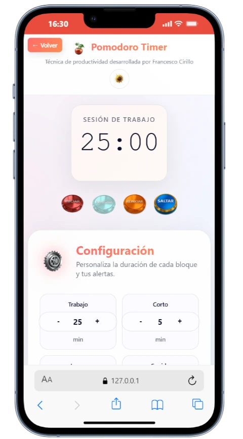
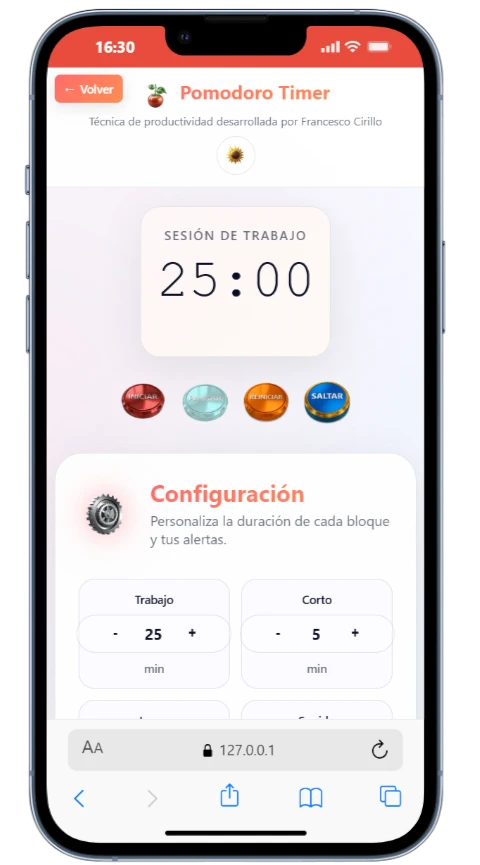

Developer junior enfocado en crear experiencias web funcionales y atractivas
Hola, soy Jorge Luis, un desarrollador web frontend junior de Panamá. Autodidacta construyendo proyectos funcionales con HTML, CSS y JavaScript para aplicar mis conocimientos y demostrar mis habilidades.
Busco mi primera oportunidad laboral en tecnología donde pueda seguir aprendiendo y creciendo como programador. Me caracterizo por ser comprometido, curioso y siempre dispuesto a aprender nuevas tecnologías.
Aplicaciones funcionales que demuestran mis habilidades técnicas y capacidad de resolución de problemas
Aplicación de productividad que implementa la técnica Pomodoro con notificaciones, sonidos personalizables y seguimiento de sesiones.
 

Tecnologías y herramientas que domino para crear aplicaciones web funcionales